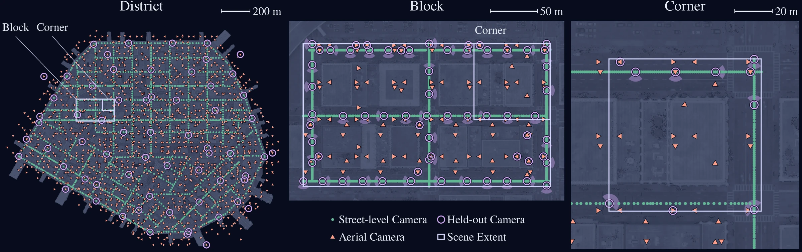
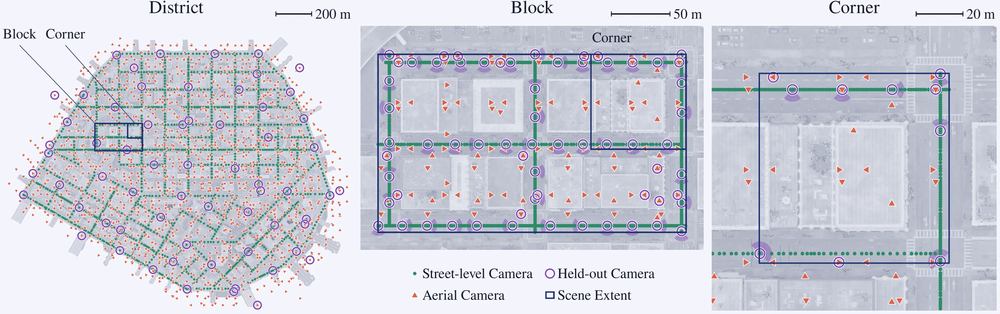

DOOM-GS
Dynamic Out-of-core Optimization for Massive Gaussian Splatting
Abstract
Traditional Gaussian Splatting (GS) methods use in-core training, i.e. assuming that GPU memory is large enough to accommodate all the primitives. This assumption breaks down when the primitives exceed the capacity of GPU memory, e.g. GS on large environments. Recent out-of-core training research starts to address this issue, but is limited to static scenes. Unlike static GS, dynamic GS primitives move in space and time, breaking common assumptions held in existing out-of-core research and impose new challenges in memory management and training. To this end, we propose Dynamic Out-of-core Optimization for Massive Gaussian Splatting (DOOM-GS), the first out-of-core optimization method designed specifically for massive-scale dynamic GS. DOOM-GS is equipped with novel memory management strategies that optimize caching for spatio-temporal primitives, and a fast learning method for large numbers of primitives. Due to the lack of suitable datasets for large-scale dynamic GS, we also contribute a new dataset for evaluation. Since there are no directly comparable methods, we adapt several closely related methods for comparison. Through extensive evaluation, we demonstrate the effectiveness of DOOM-GS which now makes it possible to reconstruct city-scale dynamic scenes with high quality on moderate hardware, serving as a foundational tool for diverse future research and applications.
Results
Held-out test videos of every experiment in the paper on DynamicMatrixCity. Each window shows twelve held-out cameras at a time: the top row shows aerial cameras and the two rows below street-level cameras. Pick a scene and a method, then drag the divider to wipe between DOOM-GS (Ours) on the left and the selected method on the right.
1. Native Dynamic Comparison
DOOM-GS (Ours) against Dynamic TideGS, a dynamic variant of TideGS with the same dynamic Gaussian representation. Both optimize a single 20M-Gaussian model over the full 120-frame sequence under the same 1,800-block GPU budget.
2. Per-Frame Dynamic Comparison
One DOOM-GS (Ours) model for the whole sequence (2.5M Gaussians) against per-frame TideGS, CLM-GS and A LoD of Gaussians, which train an independent 2.5M-Gaussian model for each of the 120 frames. Watch for flicker in regions that are static in the ground truth.
3. Ablation Study
The full DOOM-GS (Ours) model at 20M Gaussians against variants with one component removed at a time: space-time repacking, camera scheduling, or locality-constrained relocation.
4. Dynamic Representation Variants
Qualitative comparison of DOOM-GS variants using different dynamic GS representations. Held-out street-level and aerial views from Block. All variants use DOOM-GS with 20M Gaussians and identical out-of-core settings, changing only the dynamic representation.
DynamicMatrixCity Dataset
In addition we propose DynamicMatrixCity, our city-scale multi-view dataset for evaluating large-scale dynamic Gaussian splatting. Built on MatrixCity’s Small City, it adds simulated vehicles and pedestrians and provides three increasingly large scenes, Corner, Block, and District, captured from thousands of synchronized and calibrated views. It supports controlled evaluation of dynamic reconstruction, temporal consistency, and out-of-core training at massive scale.


| Scene | Extent | Cameras | Held out | Frames |
|---|---|---|---|---|
| Corner | 80 × 80 m core | 572 | 12 | 68,640 |
| Block | 260 × 150 m | 4,096 | 64 | 491,520 |
| District | 1,870 × 1,500 m | 8,192 | 64 | 983,040 |
Dynamic Content
The recording contains 2,165 vehicles from 10 models (seven cars, one truck, and two vans) and 15,000 animated pedestrians. Water surfaces are also animated and contribute to scene dynamics.